Как за 7 месяцев ФНТР получила собственную пресс-службу
С ноября 2025 года Махонина Елизавета Ильинична с нуля выстроила PR-направление Федерации: собрала базу журналистов, запустила мониторинг, наладила регулярный выход на федеральные СМИ. Сейчас ФНТР системно присутствует на ТАСС, в Российской газете, на Матч ТВ, Чемпионате, NEWS.ru и десятках других площадок. Ниже — конкретные факты, цифры и подтверждения.
0 →0
рабочих контактов журналистов и редакций, собранных вручную
0
публикаций по одной кампании — открытие Центра в МЕГА Химки
0
человек охватила эта кампания в СМИ и соцсетях
0
публикаций вокруг Суперкубка — от ТАСС до Telegram-каналов
0
блогеров работали на Чемпионате России по приглашению
0
текстов написано за дни ЧР для Матч ТВ, ТАСС, Известий
< 1 часа
ушло на то, чтобы остановить ошибочную новость ТАСС
0
потенциальная аудитория PR-кампании Суперкубка
Точка входа
Что было к ноябрю 2025 года
Проблема была не в том, что кто-то плохо работал. Проблема была в том, что системы PR попросту не существовало. Не было базы контактов, не было рассылки, не было человека, который утром проверяет, что написали о Федерации. Когда ТАСС или Чемпионат писали про ФНТР — это были, как правило, скандалы или конфликты. Спортивная, инфраструктурная и позитивная повестка в федеральных СМИ отсутствовала.
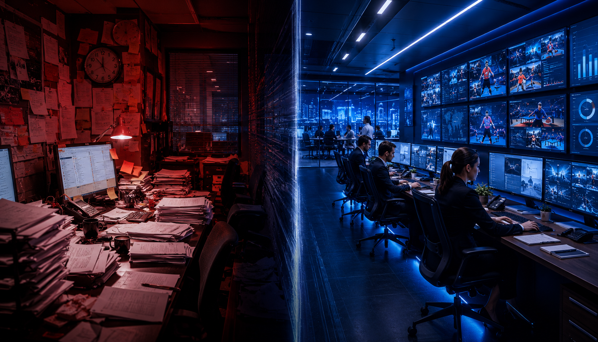
Характерный пример: в дайджесте Суперкубка зафиксировано, что публикация Российской газеты о соревновании ФНТР — всего вторая за всю историю и первая с 2006 года. Двадцать лет Федерация не попадала в главную газету страны с позитивным спортивным поводом.
✕ Ноябрь 2025
Ни одного рабочего контакта в базе СМИ
Рассылки нет — релизы уходят вручную, по памяти
Единого медиапула не существует
Мониторинг не ведётся — ошибки в СМИ обнаруживаются случайно
Федеральные издания пишут о ФНТР только в скандальном контексте
Нет механизма быстрой реакции на ложную информацию
Регулярные рассылки + персональная коммуникация с ключевыми редакциями
Пул от ТАСС и Российской газеты до районных пабликов и Telegram-каналов
Ежедневный мониторинг: ошибки ловятся за минуты, а не за дни
ФНТР в позитивной повестке: соревнования, герои, инфраструктура, массовый спорт
Антикризисный кейс отработан на практике — менее часа на нейтрализацию
PR, SMM, сайт, журналисты и мероприятия работают в одной связке
Что создано
Пять уровней PR-инфраструктуры, которых раньше не было
За полгода собрана рабочая система из пяти слоёв — каждый из которых можно передать, масштабировать и использовать для следующего события.
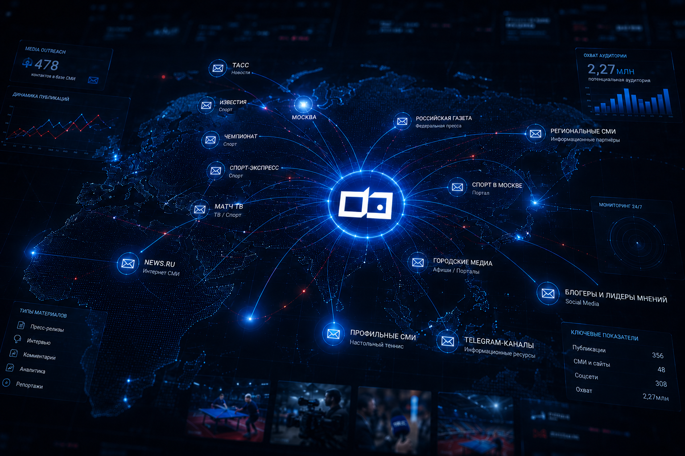
ФНТР / Пресс-служба
📋База СМИ 478 контактов, 69 площадок
🤝Договорённости ТАСС, РГ, Матч ТВ, NEWS.ru
✍️Контент 20+ материалов в месяц
🎤Мероприятия Полный цикл сопровождения
🛡️Антикризис Мониторинг + быстрая реакция
📱Блогеры 57 инфлюенсеров на ЧР
👥Команда 2 сотрудника найдены и введены
Любое следующее мероприятие ФНТР начинается не с чистого листа. Есть база, есть редакции, которые ждут материалы, есть отработанная последовательность действий, есть команда и есть понимание рисков.
Цифры
Измеримые результаты
0
уникальных e-mail-адресов в базе. 69 конкретных редакций и площадок. Каждый контакт проверен — по базе можно отправить рассылку за 15 минут.
0 / 0
публикаций и совокупный охват по открытию Центра ФНТР в МЕГА Химки: 170 выходов в СМИ, 192 в соцсетях.
0
публикаций по Суперкубку 2025. 48 — в СМИ и на сайтах, 308 — в соцсетях. Аудитория: 2,27 млн, просмотры: 368 981.
С 2006
Впервые за 20 лет Российская газета напечатала материал о соревновании ФНТР — о чемпионате, о спортсменах, о развитии вида спорта.
0
блогеров приглашены и работали на ЧР 2026: lifestyle (22), спорт (11), fashion (10), семья (7), медиа (5), другое (2).
0
текстов за дни ЧР: материалы для Матч ТВ, ТАСС, Известий, NEWS.ru. Плюс 3 пресс-релиза и текст для билетной платформы.
+5
Контент-план Матч ТВ перевыполнен на 5 материалов. Команда нашла способ перерабатывать флеш-интервью в тексты прямо на площадке.
0
совокупная цитируемость СМИ по Суперкубку. Лидеры: tass.ru, sport.rambler.ru, rg.ru.
Кейсы
Шесть проектов, которые доказали работоспособность системы
Каждый кейс проверял отдельный элемент PR-инфраструктуры: от локального фестиваля до федерального чемпионата, от инфраструктурного проекта до антикризисной реакции в прямом эфире.
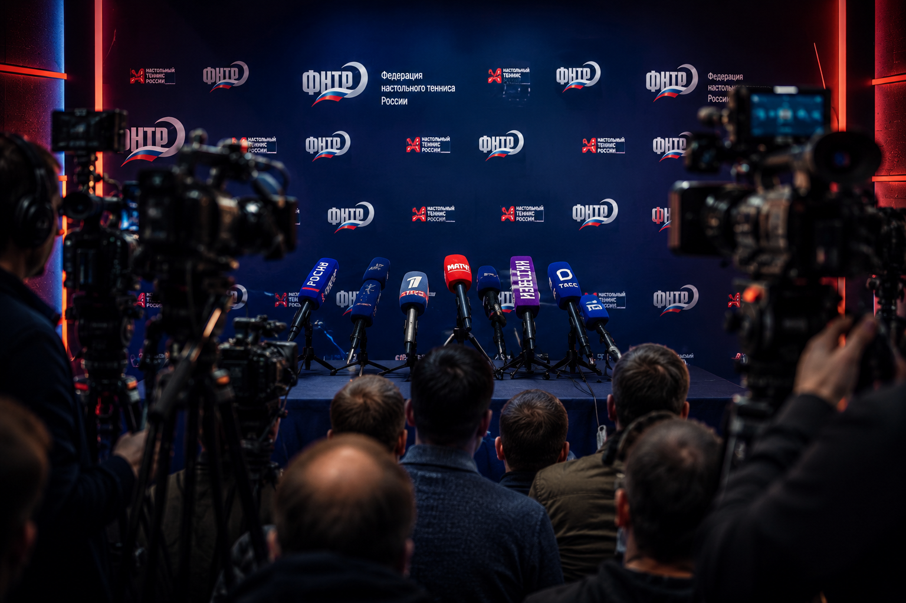
Декабрь 2025
МЕГА-1: фестиваль в Химках — первая проверка боем
Локальное событие, которое удалось вывести на 2,7 млн охвата через связку пресс-релиза, региональных структур и городских СМИ.
72публикации
33в СМИ
2,7 млнохват
Февраль 2026
МЕГА-2: открытие Центра — 362 публикации и 10,8 млн охвата
Крупнейшая кампания: ФНТР показана как создатель спортивной инфраструктуры и субъект городской повестки. 12 блогеров, 2 230 посетителей в день открытия.
362публикации
10,8 млнохват
170в СМИ
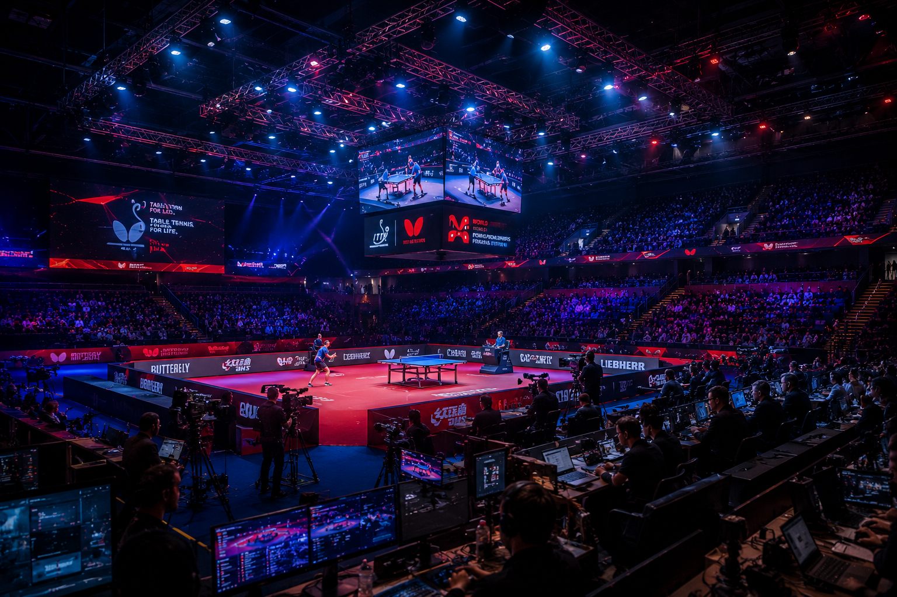
Январь 2026
Суперкубок: ФНТР возвращается в Российскую газету спустя 20 лет
Персональные договорённости с Championat.com, NEWS.ru, Спорт в Москве и РГ. Результат — интервью, эксклюзивы, партнёрские интеграции и печатная версия РГ.
356публикаций
2,27 млнаудитория
8+3аккредитации
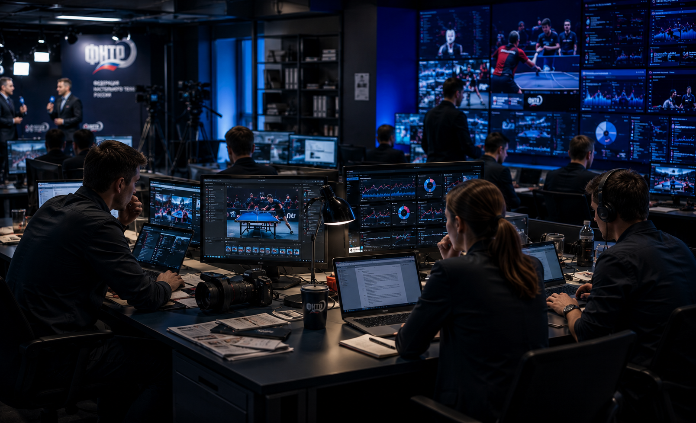
Март 2026
ЦДМ: настольный теннис как городской праздник и ролик в метро
Всемирный день настольного тенниса: ТАСС, Российская газета, Матч ТВ, Детское радио, флешмоб и видеоролик в московском метро.
44+публикаций
17+СМИ
406 тыс.охват
Апрель 2026
Чемпионат России: пресс-служба полного цикла
На площадке — Москва 24, МИР, NEWS.ru, ТАСС, Матч ТВ. 40 текстов, 57 блогеров, контент-план Матч ТВ перевыполнен.
40текстов
57блогеров
+5сверх плана
Антикризис
Ошибка ТАСС нейтрализована за час — до того, как её подхватили
Ложная новость о допуске юниоров с флагом появилась за минуты до пресс-подхода Бабакова. Позиция согласована, журналисты получили разъяснение, опровержения вышли.
<1 чреакция
ТАССисточник
СМИ и договорённости
Живой медиапул с персональными связями
478 контактов в рабочей базе. После первой информационной рассылки редакции начали отвечать сами: предлагать форматы, запрашивать героев, приглашать на эфиры. С ключевыми площадками выстроены персональные отношения — ТАСС, Российская газета, Матч ТВ, Championat.com, NEWS.ru, Спорт в Москве.
🏛️ Федеральные
ТАСС — системное сотрудничество, договор
Российская газета — печатная и онлайн-версия
Известия — интервью, комментарии
Ведомости — входящий запрос
Forbes — входящий контакт
⚽ Спортивные
Матч ТВ — контент-план, ежедневные хайлайты
Championat.com — эксклюзивы, интервью
Sport24, Sports.ru, Спорт-Экспресс
Спорт в Москве — партнёрство
🏙️ Городские и региональные
Москва 24 — съёмочная группа на ЧР
Телекомпания МИР — съёмочная группа на ЧР
РИАМО, 360, REGIONS.ru
Пресс-службы Химок и МО
🏓 Профильные
TableTennisLife, Vistasport, Шиповик
Профильные Telegram-каналы
👨👩👧 Семейные и массовые
Детское радио — входящее приглашение на эфир
Городские афиши, семейные сообщества
📱 Блогеры (57 на ЧР)
Lifestyle — 22 блогера
Спорт и фитнес — 11
Fashion и бьюти — 10
Семья и дети — 7
Медиа и селебрити — 5
Ключевые площадки медиапула
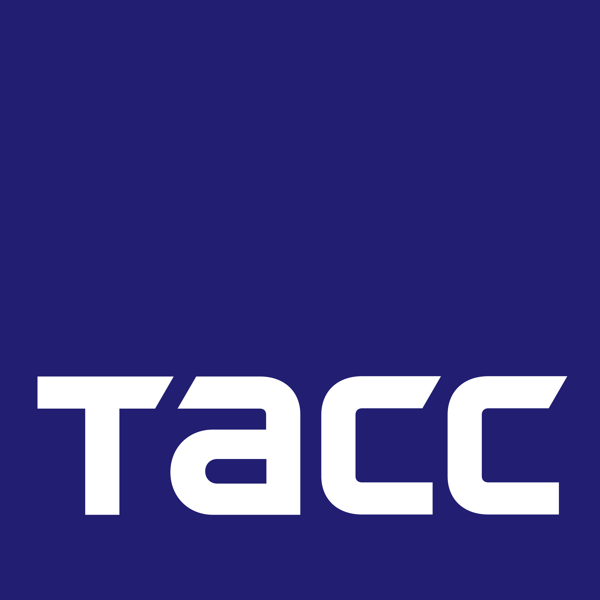
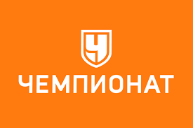
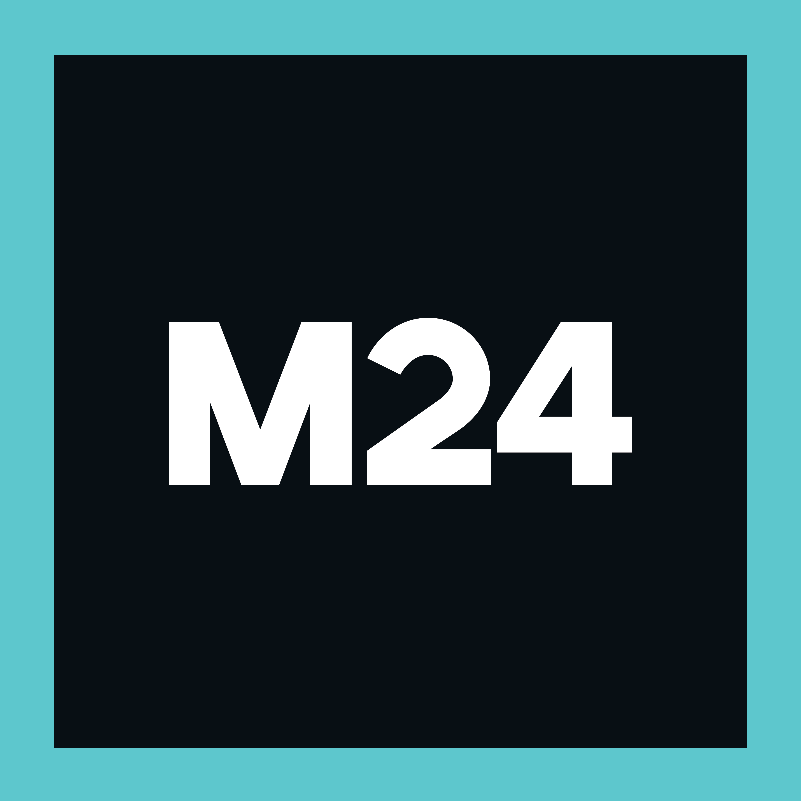
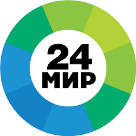
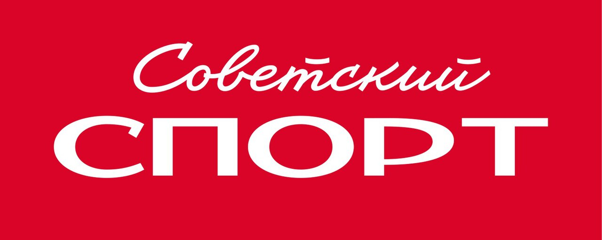
Антикризисная работа
Как за 50 минут остановили ложную федеральную новость
Апрель 2026, Чемпионат России. За несколько минут до пресс-подхода Александра Бабакова в ленте ТАСС появляется сообщение: якобы ITTF разрешила российским юниорам выступать под флагом и с гимном. Тема взрывоопасная — связана с международным статусом российского спорта, моментально подхватывается агрегаторами.
⚠️
Ошибочная публикация
ТАСС выпускает некорректную новость
🔍
Обнаружение
Мониторинг ловит за минуты
📞
Согласование
Позиция ФНТР утверждена
📨
Рассылка
Журналисты получают разъяснение
📰
Опровержения
СМИ публикуют корректную позицию
✅
Результат
Риск снят менее чем за час
Что могло произойти
Ложная новость расходится по десяткам изданий. Агрегаторы тиражируют. Формируется повестка, которую Федерация не контролирует. Через час — уже поздно что-то менять, новость закрепилась.
Что произошло на самом деле
Ошибка обнаружена через систему мониторинга. Позиция Федерации согласована и передана журналистам. В публичном поле вместо ложной новости — официальное разъяснение ФНТР. Вся цепочка — менее часа.
Контент и сайт
Больше 20 материалов каждый месяц — в разных жанрах и для разных площадок
Федерация получила полноценный контент-конвейер: короткие новости, подписи к хайлайтам, интервью со спортсменами, аналитические разборы и дайджесты для руководства. Сайт ФНТР стал официальной точкой, откуда журналисты и партнёры берут проверенную информацию.
НовостиПресс-релизыПост-релизыИнтервьюРепортажиАналитикаПромо-текстыМатериалы для СМИДайджестыПодписи к хайлайтамОфициальные разъяснения
0
текстов за дни Чемпионата России — для Матч ТВ, ТАСС, Известий, NEWS.ru
0
пресс-релиза за ЧР + 1 текст для билетной платформы
20+
материалов готовится ежемесячно в разных форматах
Команда и процессы
Направление стало отделом: два сотрудника найдены и введены в работу
Отдельный результат — кадровый. Найдены, проведены через собеседования, доведены до трудоустройства и полноценно включены в процессы два человека. PR-направление перестало быть нагрузкой одного специалиста — появилась команда с распределением ролей.
Планирование тем
→
Подготовка материалов
→
Согласование
→
Рассылка по базе
→
Работа с редакциями
→
Публикации
→
Мониторинг
→
Корректировка
→
Дайджест
→
Выводы
Махонина Е.И. уже сейчас выполняет все функции руководителя пресс-службы: постановка задач двум сотрудникам, контроль качества текстов, переговоры с редакциями, координация подрядчиков, работа с договорами ТАСС, антикризис в прямом эфире и позиционирование Федерации в медиаполе.
Блогеры Чемпионата России: 57 человек по категориям
Lifestyle
22 — 38,6%
Спорт, фитнес, НТ
11 — 19,3%
Fashion, стиль, бьюти
10 — 17,5%
Семья, дети, досуг
7 — 12,3%
Медиа, селебрити
5 — 8,8%
Другое
2 — 3,5%
Хронология: ноябрь 2025 — май 2026
Ноябрь 2025
Старт: ноль контактов, ноль процессов
Начало сборки базы СМИ, первые контакты с редакциями
Декабрь 2025
МЕГА-1: фестиваль в Химках
72 публикации, 2,7 млн охват. Первая проверка связки с региональными структурами
Январь 2026
Суперкубок России
356 публикаций. Российская газета впервые с 2006 года. Печатная версия
Февраль 2026
МЕГА-2: открытие Центра ФНТР
362 публикации, 10,8 млн охват, 12 блогеров, 2 230 посетителей
Март 2026
Всемирный день настольного тенниса / ЦДМ
44+ публикаций, ролик в метро Москвы, ТАСС, РГ, Матч ТВ, Детское радио
Апрель 2026
Чемпионат России + антикризис
40 текстов, 57 блогеров, 5 съёмочных групп на площадке. Ложная новость ТАСС нейтрализована за час
Май 2026
Это досье
Итоги зафиксированы. Система работает
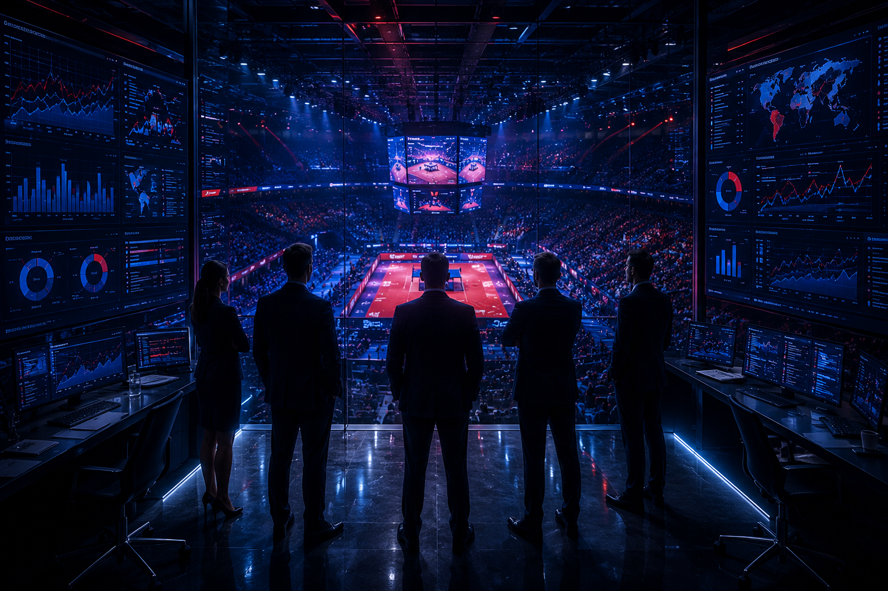
Итог: у ФНТР есть пресс-служба. Осталось это закрепить
За семь месяцев Махонина Елизавета Ильинична собрала то, чего раньше не было: 478 контактов, рабочие отношения с ТАСС, Российской газетой, Матч ТВ и десятками других редакций, команда из двух сотрудников, отработанный антикризис, регулярное производство материалов и шесть крупных кампаний с измеримыми результатами. Федерация перестала быть заметной только в скандалах — и начала появляться в позитивной, спортивной, инфраструктурной и городской повестке.
Назначение Махониной Е.И. руководителем пресс-службы — закрепление того, что уже работает. Она выстроила базу, процессы, редакционные связи, контент, команду и антикризисную реакцию — то есть создала фундамент пресс-службы ФНТР.
Что Махонина Е.И. уже выполняет на уровне руководителя
Все перечисленные функции фактически выполняются Махониной Елизаветой Ильиничной прямо сейчас. Каждая подтверждена конкретными действиями за период с ноября 2025 года.
💼
Стратегическое планирование
Определение информационной повестки Федерации на каждый месяц. Выбор тем, форматов, площадок и героев. Формирование PR-стратегии, привязанной к спортивному календарю ФНТР.
👥
Управление командой
Поиск, собеседование, найм и ввод в работу двух сотрудников. Постановка задач, контроль сроков и качества текстов, распределение ролей внутри отдела.
🤝
Переговоры с редакциями
Личные договорённости с ТАСС, Российской газетой, Матч ТВ, Championat, NEWS.ru, Спорт в Москве. Предложение тем, героев, эксклюзивов. Выстраивание долгосрочных отношений.
📜
Юридическое сопровождение
Работа с договором ТАСС: юридическое оформление, оптимизация количества публикаций, контроль условий. Координация с юристами Федерации.
🛡️
Антикризисное управление
Оперативное обнаружение ошибочной информации, подготовка позиции Федерации, согласование с руководством, передача разъяснений журналистам. Весь цикл — менее часа.
🎤
Сопровождение мероприятий
Полный цикл: от подготовки промо-материалов до координации съёмочных групп на площадке, пресс-подходов, аккредитаций, ежедневных хайлайтов и пост-релиза.
📱
Работа с блогерами
Формирование пула из 57 блогеров разных категорий: поиск, приглашение, координация на площадке, контроль публикаций, отчётность.
📈
Аналитика и отчётность
Подготовка дайджестов для руководства с точными цифрами: публикации, охваты, цитируемость, аудитория. Мониторинг публикаций, сбор данных Медиалогии.
🔗
Координация PR + SMM + сайт
Синхронизация пресс-службы с SMM-направлением, сайтом ФНТР, спортивным отделом и внешними подрядчиками. Единая логика подачи информации.
✍️
Контент-производство
Личная подготовка текстов для ТАСС, Матч ТВ, Известий. 40 текстов за ЧР. Пресс-релизы, интервью, репортажи, промо, дайджесты, подписи к хайлайтам.
📋
Построение базы СМИ
С нуля собрано 478 проверенных контактов и 69 площадок. База является рабочим инструментом — по ней можно запустить рассылку за 15 минут.
🎯
Позиционирование Федерации
Перевод ФНТР из скандальной повестки в позитивную: спорт, герои, инфраструктура, массовый спорт, городские праздники. Российская газета впервые с 2006 года.
МЕГА-1: первый проверочный кейс новой PR-системы
Задача
Проверить, можно ли быстро собрать внешнее информационное поле вокруг локального события ФНТР. До этого момента фестиваль в торговом центре не вышел бы за пределы публикации на сайте Федерации.
Что было сделано
Подготовлен и разослан пресс-релиз. Опубликован пост-релиз. Проведена рассылка по базе СМИ. Материалы размещены на сайте и в социальных сетях ФНТР. Отдельно проведён нетворкинг с Правительством Московской области, Министерством спорта МО и пресс-службой города Химки — это позволило завести информацию в региональную медиасистему и выйти за пределы спортивной повестки.
Инструменты
Пресс-релиз, пост-релиз, база СМИ, рассылка, сайт ФНТР, соцсети, персональная коммуникация с региональными структурами.
Вывод для руководства: даже локальное мероприятие может быть масштабировано до 2,7 млн охвата, если у пресс-службы есть база, рассылка, контакт с региональными структурами и понятная последовательность действий.
МЕГА-2: открытие Центра развития настольного тенниса ФНТР
Задача
Обеспечить масштабное коммуникационное сопровождение открытия Центра в МЕГА Химки. Показать ФНТР как создателя спортивной инфраструктуры и самостоятельного субъекта городской повестки.
Что было сделано
Пресс-релиз, пост-релиз, рассылка по полной базе СМИ. Взаимодействие с государственными структурами. Публикации на сайте ФНТР, посты в Telegram и VK. Привлечены 12 блогеров для освещения события. Информационная поддержка через Telegram-каналы. Координация с площадкой МЕГА Химки.
Инструменты
Полная база СМИ, блогерское направление, государственные структуры МО, соцсети, Telegram-каналы, партнёрская интеграция с МЕГА.
362публикации
170в СМИ
192в соцсетях
10,8 млнсовокупный охват
12блогерских интеграций
178,1 тыс.digital-охват блогеров
2 230посетителей в день открытия
Медиапокрытие: федеральные СМИ, региональные СМИ МО, муниципальные и городские медиа, Telegram-каналы, спортивные площадки, блогеры.
Вывод для руководства: ФНТР может формировать инфраструктурную повестку. Федерация была показана не через соревнования, а через развитие спортивной среды и массового спорта. Это принципиально новый формат присутствия в медиаполе.
Суперкубок: федеральная огласка, эксклюзивы и возвращение в крупные редакции
Задача
Вывести спортивное событие ФНТР в федеральную повестку. Не просто получить упоминания — а добиться интервью, эксклюзивов и присутствия в печатной прессе.
Что было сделано
Подготовлены пресс-релизы и пост-релиз. Проведена активная рассылка по базе. Организованы интервью для ключевых изданий. Обеспечена контент-поддержка на сайте и в соцсетях. Главная ценность — персональные договорённости с Championat.com, NEWS.ru, Спорт в Москве и Российской газетой. Результат — не просто публикации, а качественные редакционные материалы: интервью, эксклюзивы, партнёрские интеграции.
356публикаций
48в СМИ и на сайтах
308в соцсетях
2 277 318потенциальная аудитория
368 981просмотров
6 894вовлечённость
8+3аккредитации (СМИ + блогеры)
1 166 484совокупная цитируемость
Российская газета
Новость о соревновании ФНТР в Российской газете зафиксирована как вторая за всю историю и первая с 2006 года. Материал опубликован в печатной версии федерального издания. Двадцать лет Федерация не попадала в главную газету страны с позитивным спортивным поводом.
Лидеры по цитируемости: tass.ru, sport.rambler.ru, rg.ru.
Вывод для руководства: ФНТР может возвращаться в федеральную повестку не через конфликты, а через спортивные события, подготовленные материалы, человеческие истории и редакционные договорённости.
ЦДМ: настольный теннис как городское, семейное и массовое событие
Задача
Представить настольный теннис не только как профессиональную дисциплину, а как доступный городской, семейный и объединяющий формат. Расширить образ вида спорта в публичном восприятии.
Что было сделано
Подготовлены пресс-материалы и проведена рассылка. Работа с федеральными, городскими и профильными площадками. Партнёрские интеграции. Организован флешмоб. Размещён видеоролик о настольном теннисе в метро Москвы. Задействованы ТАСС, Российская газета, Матч ТВ, Спорт в Москве, Детское радио и другие площадки.
44+подтверждённых публикаций
17+СМИ и сайтов
27+соцсетей и Telegram
406 тыс.+подтверждённый охват
Каналы кампании: федеральные СМИ, городские медиа, спортивные площадки, соцсети, партнёрские аккаунты, Детское радио, метро Москвы, видеоконтент, флешмоб.
Вывод для руководства: ФНТР способна формировать собственную повестку за пределами спортивного календаря. Дайджест прямо фиксирует усиление публичной роли Федерации как самостоятельного субъекта медиаполя.
Чемпионат России: пресс-служба полного цикла
До мероприятия
Подготовлены и размещены промо-материалы и интервью на Матч ТВ. Организованы ключевые интервью для ТАСС, Известий и Ведомостей. Проведена рассылка пресс-релизов. Выстроена персональная коммуникация с каждым аккредитованным журналистом.
На площадке
На площадке присутствовали Москва 24, Телекомпания МИР, NEWS.ru, ТАСС, Матч ТВ. Организованы: аккредитация представителей СМИ, координация журналистов, пресс-подходы, интервью, сопровождение съёмочных групп, контроль качества съёмки и соблюдения регламентов. Ежедневная передача хайлайтов и материалов на Матч ТВ.
После мероприятия
Рассылка пост-релиза. Сбор публикаций. Подготовка дайджеста для руководства.
40журналистских текстов
3пресс-релиза
1текст для билетной платформы
57блогеров
+5сверх контент-плана МТВ
5съёмочных групп на площадке
Контент-план Матч ТВ
Контент-план полностью выполнен и перевыполнен на 5 материалов. Команда нашла формат переработки флеш-интервью в текст прямо на площадке — это адаптивность, а не тушение пожаров.
Вывод для руководства: PR-направление способно сопровождать событие полного цикла: до мероприятия, на площадке и после. Это управление информационным полем, журналистами, съёмочными группами, спортсменами, блогерами, SMM-связкой и рисками.
Антикризисный кейс: ошибочная новость ТАСС нейтрализована менее чем за час
Ситуация
Апрель 2026, Чемпионат России. За несколько минут до пресс-подхода Александра Бабакова в ленте ТАСС появляется сообщение: якобы ITTF разрешила российским юниорам выступать под флагом и с гимном. Тема связана с международным статусом российских спортсменов, обладает высочайшим репутационным риском и моментально подхватывается агрегаторами.
Действия — хронология
1. Мониторинг зафиксировал публикацию в течение нескольких минут.
2. Срочная подготовка корректной позиции Федерации.
3. Согласование формулировки с руководством.
4. Передача официального разъяснения журналистам.
5. Публикация опровержений в СМИ.
Результат
Менее чем за час публичный фокус изменён: вместо закрепления ложной новости в повестке появились материалы с официальным разъяснением ФНТР. Каскадного распространения не произошло.
Что могло произойти без системы мониторинга
Ложная новость расходится по десяткам изданий. Агрегаторы тиражируют. Формируется повестка, которую Федерация не контролирует. Через час — уже поздно что-то менять, новость закрепилась бы в публичном поле.
Вывод для руководства: до появления системы мониторинга подобная ситуация развивалась бы без контроля Федерации. Сейчас ошибка обнаружена, позиция подготовлена, журналисты получили разъяснение, риск нейтрализован. У ФНТР есть работающий механизм антикризисной реакции.